Ah, Manila, yet again. This time to meet friends.
I had the pleasure of staying at The Henry Hotel, a heritage hotel which resembles an old Manila style house.
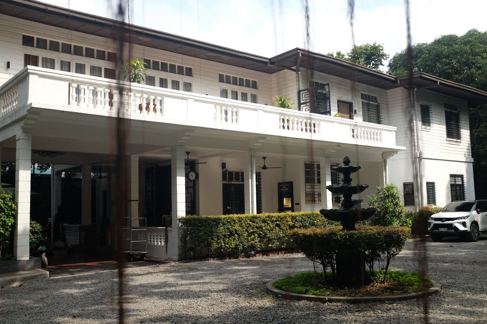 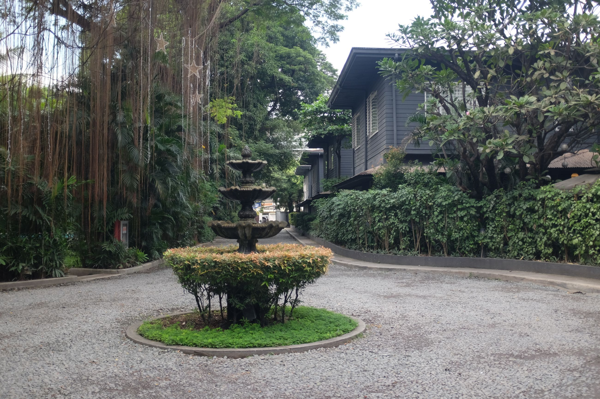 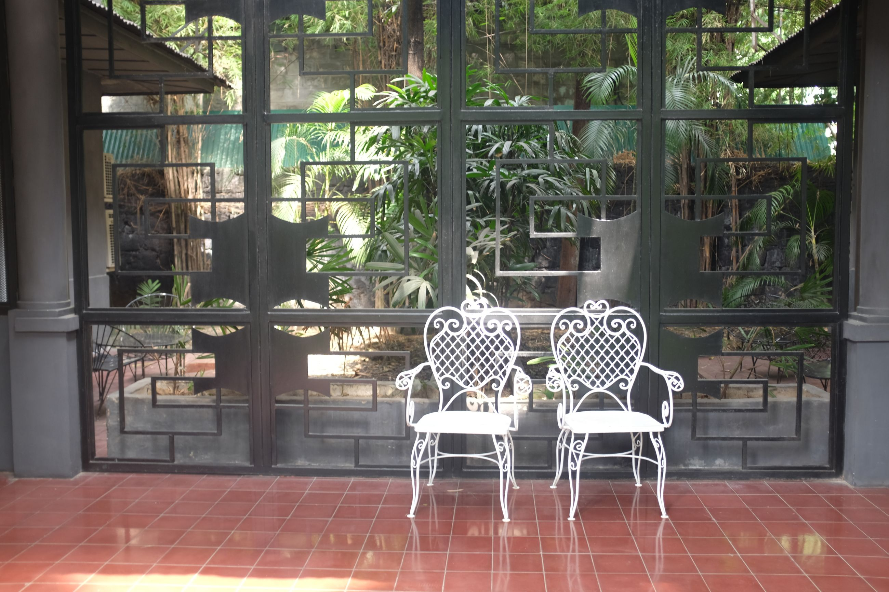 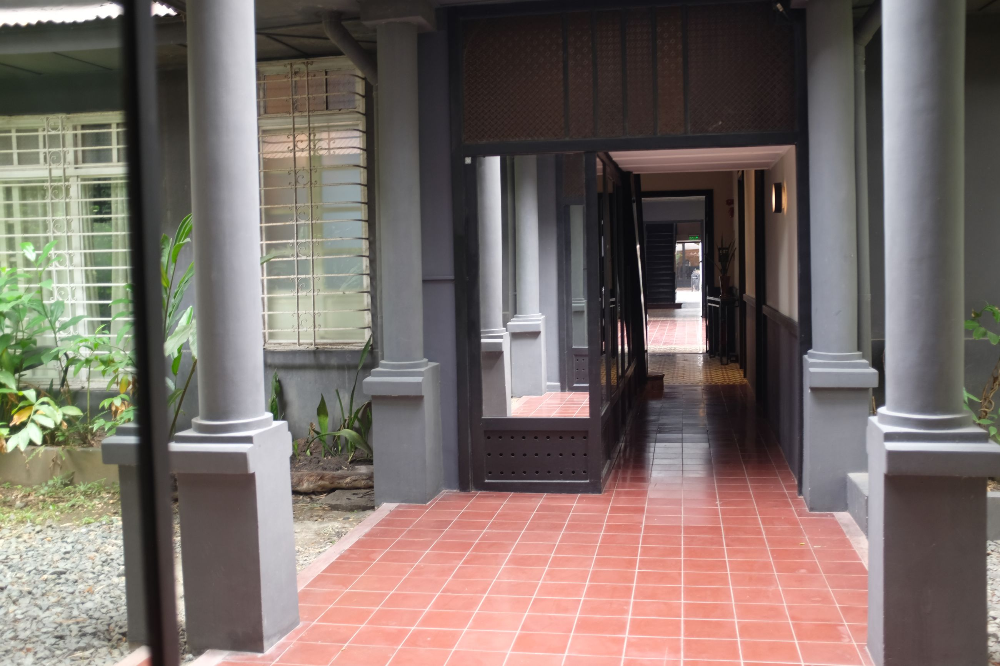 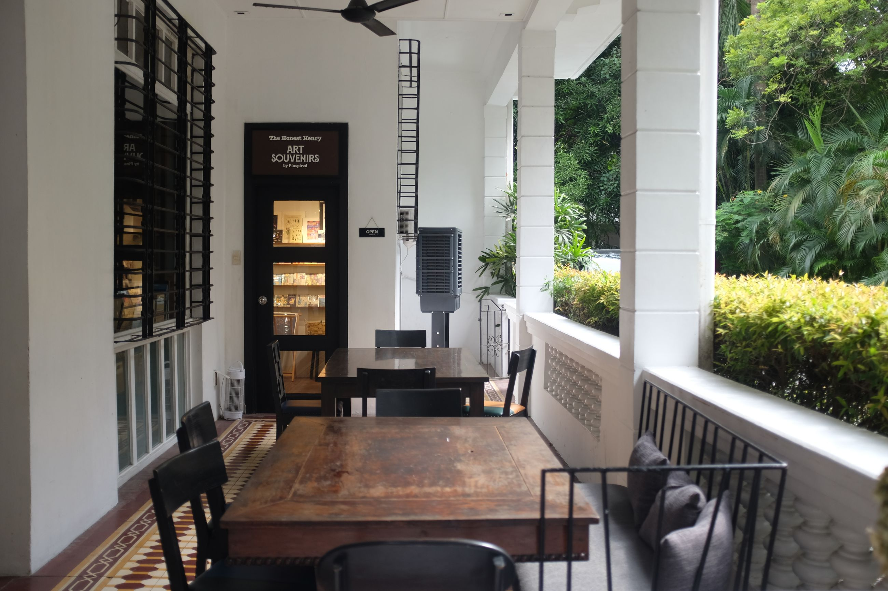
During the day, I walked around a street market in Makati with a friend. Mostly, as you guessed, eating.
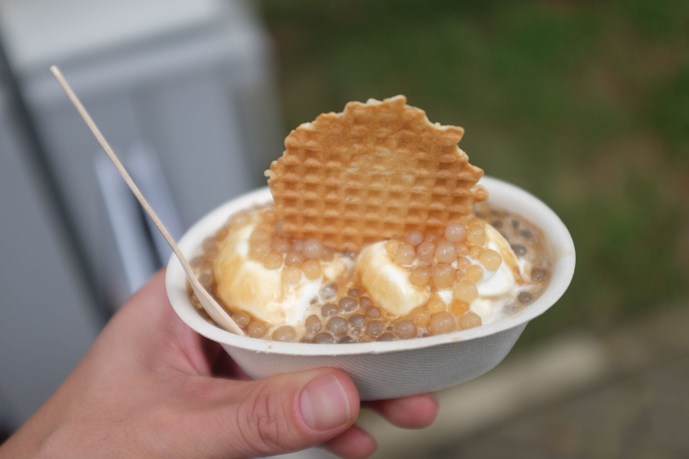 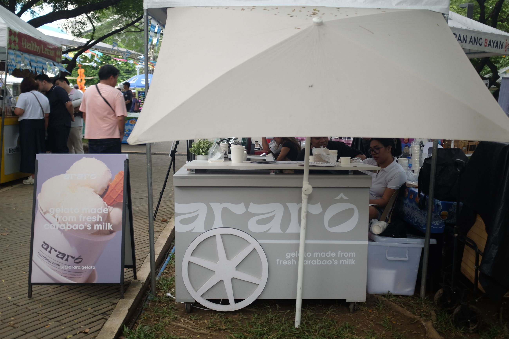
Makati area has some interesting brutalist architecture.
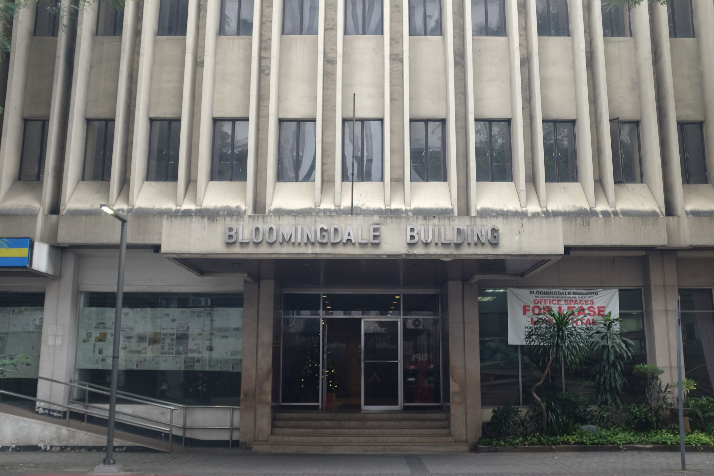 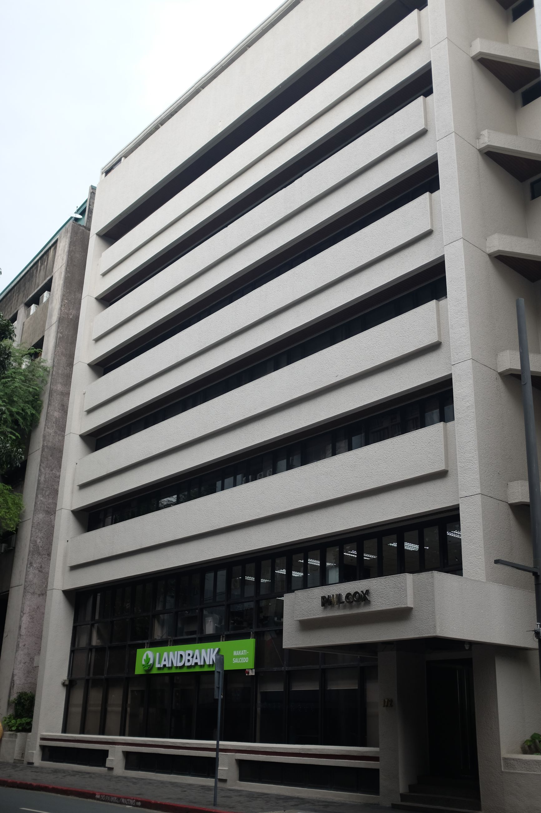
Filipinos are also innovative with their experiences. Here is a coffee shop that doubles as a... make-up shop.
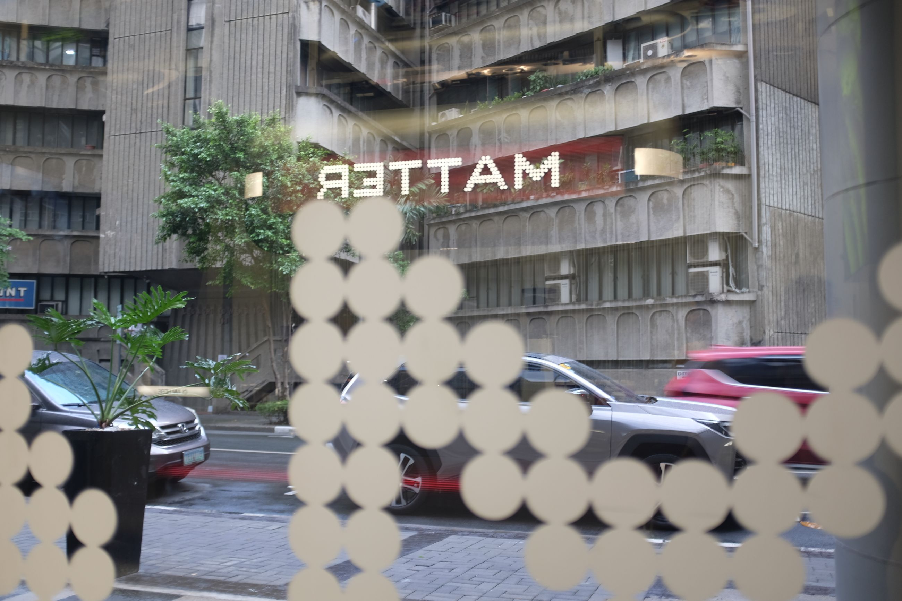 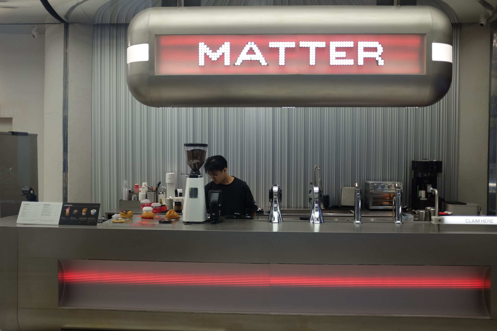
This trip was more for visiting some colleagues than it was for sight-seeing. Every time I come, I discover a new flavour profile for Filipino food. It's all delicious.
Per a colleague's recommendation, I think next time I have to go to Quezon City -- somewhere outside the central parts.